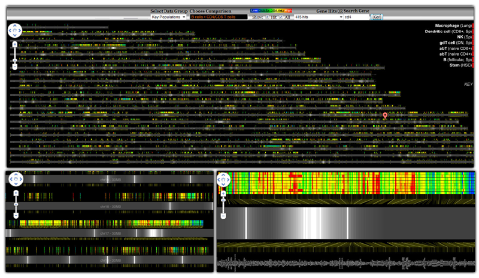

|
As part of our efforts to distribute visualizations of large scientific datasets using Google Maps, gene expression data measurements over eight cell types of the entire mouse genome were mapped onto genome coordinates. The top view shows the general analysis framework; zoomed-in views appear at the bottom. Three types of visual queries can be performed, depending on the zoom. At an overview, lists of relevant genes can be highlighted using Google markers with custom icons - white lines with alpha gradients on each side marking regions with interesting expression characteristics. At an intermediate zoom (lower left), regions with similar expression can be identified: a blue low-expression region is visible at center right. At a zoomed-in level individual expression values and gene names can be identified. |